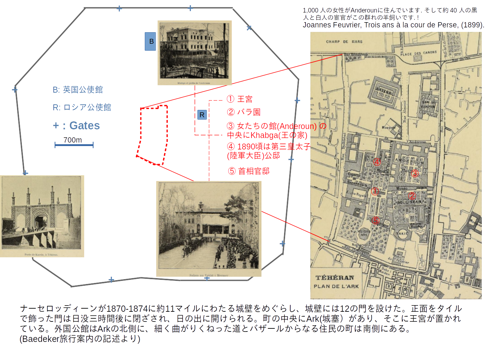
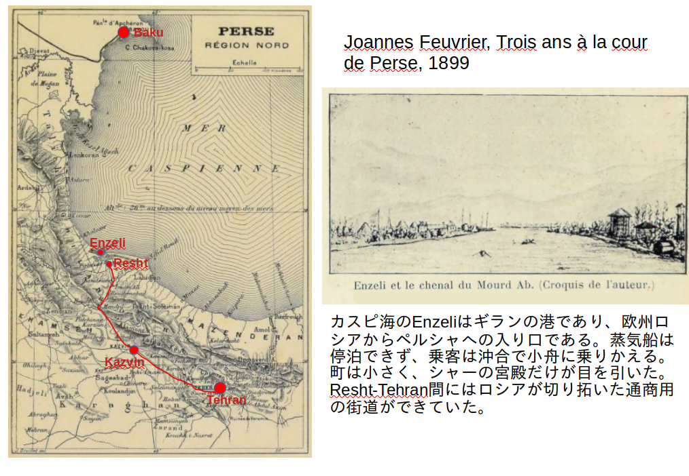

ペルシャ宰相ミールザー・アリ・アスガル・ハーン(Mirza Ali Asghar Khan Amin al-Soltan)の時代¶
目次
福島安政のテヘラン¶
外務省外交資料館によれば、日本政府がペルシャ(イラン)に使節団を派遣したのは1890(明治13)年が最初である。ペルシャ湾のブシェールから陸路を馬で入っているが、大変な冒険旅行だったらしい。
{kind=link}
19世紀末〜20世紀初のガージャール朝ペルシア。¶
このころのペルシャは坂道を登ろうとしているカタツムリのような形をしている。腹側にペルシャ湾があり、前にはオスマン帝国、頭の上と背中はロシアにおさえられている。以前は殻の部分はもっと大きく、頭ももっと上に伸びていたのだが、ロシアによってどちらも縮められてしまったのである。そして、ペルシャ湾と、カタツムリの尻の方(現在のパキスタン方面)には英国がいる。しかし、この形を何とか保ったまま現代にいたっているのは、その間にたいへんな苦労があったのである。
陸軍大佐福島安政が1895年10月〜1897年3月までの亜細亜-欧州調査旅行の途中、テヘランに入ったのは1896年7月、やはりブシェールから陸路だった [sawada21] 。その当時のテヘランは、
要するに一国の首都と云ふも砂漠中に立てられたる一市街に過ぎず (1902年(明治35)年、 井上雅二、「中央亜細亜旅行記」(1903)より)
といった程度のものだった。
{kind=link}
この時期のペルシャはガージャール朝時代(1796-1925）である。福島大佐が拝謁したペルシャ王はモザッファロッディーン(Mozaffar ad-Din Shah Qajar)で、1896年5月に即位し、1907年1月心臓発作で死ぬまで王位にあった。
また、ときの宰相はミールザー・アリ・アスガル・ハーン・アミン アル・ソルタン(Mirza Ali Asghar-Khan Amin al-Soltan, 1858-1907)であった。彼はアミン アル・ソルタンと呼びならわされるが、「アミン アル・ソルタン」は名前ではなくて尊称である。1900年、彼はさらにAtabak(王の後見)という尊称を受けたので、以降はアタバクと呼ばれる。ややこしいので、以下では、「アリ・アスガル」と呼ぶ。
ガージャール朝ペルシア は多民族国家である。人口は1,200万人弱でそのうちの30%ほどが遊牧民だった。ペルシャ語を公用語としたが、ペルシャ語を話すのは全人口の50%にすぎず、識字率にいたっては5%でしかなかった [dnou16] 。ガージャール朝は中央アジアのトルコ(チュルク)系トゥルクメン人がペルシャを征服して作った王朝なので、ペルシャ、トルコ系両方の要素が入っている。アリ・アスガルの名の頭にある"Mirza"はペルシャで書記能力をもつことを示すタイトルが姓のように使われたものらしい。"-Khan"はトルコ系で族長といった意味合いのこれも元は称号である 1 。
{kind=link}
先王ナーセロッディーンの治世はほぼ半世紀にわたった。この王によって、アリ・アスガルが他の有力者たちを越えて事実上の首相に引きあげられたのは、1883年、弱冠25歳のときである。宰相アリ・アスガルは、王の奢侈をささえ、国の近代化を進めるために、英露に権益をわたすことで資金を得た。また、英露の力のバランスをとることに腐心した 2 。
国内には少しずつ中間階級も形成されてきた。彼らの多くは商人であって、司法や徴税の公正をもとめた。知識層にはさらに立憲議会制への要求が生まれてきた。それらの運動は自然に排外思想と結びついた。
1896年5月、ナーセロッディーン（Naser al-Din Shah）が反英・イスラム主義者に暗殺されたとき、政変をおそれたアリ・アスガルは王の死を隠して、こっそり東アゼルバイジャンのタブリーズから王子モザッファロッディーンをテヘランに呼びもどした。それまで、王子は父王に信頼されず、タブリーズで監視下におかれていた。アリ・アスガルは英露両国の支持をとりつけつつ、しずかに王位継承を実現した。しかし、新王モザッファロッディーン・シャーのとりまきの策動などにより、半年後の1896年11月にアリ・アスガルは宰相を解任される。
このような背景で、テヘランの英国領事は福島大佐に、モザッファロッディーン・シャーと北部イラン人を親露的と評したのだった。福島の見たペルシャは、財政は破綻し、国軍というほどの軍備も持てず、官吏、軍人ともに規律も士気もなく、英露によって分割されずにいるのは、たまたま英露それぞれが他地域に問題を抱えていて余力がなかったからという、脆弱な姿をさらしていた。
解任後のアリ・アスガルは軟禁状態にあった。が、新政権は国内を治めきれず、結局、1898年7月に彼を首相に再任する。ペルシャの財政問題はひどくなる一方で、英露からの重なる借款によって不足をおぎわなければならなかった。借金返済のため関税徴収を確実にするには、腐敗したペルシャ人官吏にはまかせられなかった。アリ・アスガルの首相再任前から、ペルシャはベルギー人を雇って、通関事務をまかせるようになっていた。なぜベルギー人かといえば、ベルギーは利害のうえで第三国、かつ強国ではなく、人件費も比較的安かったからである。首相アリ・アスガルは財政政策の主導権をにぎることができず、英国の支持も失って、1903年9月に辞任する。
- 1
"Amin al Soltan"が、"Emin es Sultan"と記されている例もあり。後者はトルコ的表現か。
- 2
ペルシャの近代史は錯綜していて一読参考文献間の整合をとるのも容易ではない。当時の政治状況は、Encyclopedia Iranica Onlineに多くもとづく。アリ・アスガルの評価など、視点の置き方によって随分ちがってくる [browne09] のは、政治家にはありがちなことである。彼は英露に国を切り売りした張本人とも言われる。
シベリア経由のHajj¶
1903年12月 明治政府はペルシャと修好通商条約を結ぼうとして、締結を三橋信方駐オランダ特命全権に委任していた。ようやく、ペルシャの地政学的な重要性が認識されてきたのである。しかし、ペルシャ国内政治状況や日露関係のため、ペルシャ側から交渉を打ち切った [mofa16] 。
首相職を去ったアリ・アスガルは、1903年、王にHajj(メッカ巡礼)のための長期休暇を申請する。といっても、巡礼月(1904年2月末)はずっと先のことで、実際はそれまで世界を見てまわろうというのであった。前王ナーセロッディーンは近代化を進める一方、西欧思潮の国内流入を制限し、臣下の外遊もなかなか認めなかった。対照的に、モザッファロッディーンは父王ほど開明的でない分、特に思想統制も行わなかったという。王は、トルコは通らないことという条件つきで、アリ・アスガル一行の外遊を認めた。アリ・アスガルは、王の信頼厚いメーディ・ゴリ・ハーン・ヘダヤート(Mehdi Qoli Khan Hedayat (1863-1955))を一行に加えた 3 。
彼らの世界一周旅行の真の目的はイラン近代化のための各国の教育・文化行政の調査である。イランの近代化は急務だったが、近代化即西洋化ではない道を探らなければならなかった。彼らは、文化的アイデンティティーを失わずに近代化を遂げた国として、日本をひとつのモデルと見なしていた。
アリ・アスガルに同行した ヘダヤート は後にパフラヴィー朝(1925-1979)で首相となるのだが、このときはアリ・アスガルの通訳をつとめ、世界一周旅行の紀行を残した。彼は先にドイツに留学しており、当時のイラン人としては欧州事情にくわしかった。その紀行文は、イラン近代化に大きな役割をになった文人政治家の目にうつったロシアや日本の姿をしるす貴重な資料のはずだが、外国語には翻訳されていないようである。
アリ・アスガル一行の1903末-1904初の訪日が、私的旅行だったとはいえ、日本にはほとんど記録として残されていないようなのは奇妙に思えるほどである 4 。旅の詳細をいくつかの論文 [green13a] , [green13b] , [raj88] , [ringer02] に断片的にあつかわれているところや、当時の新聞記事等から拾ってみた。その旅程は以下のようだった。
19世紀末、メッカ巡礼では、カスピ海西岸からコーカサスを黒海に抜けて、黒海、地中海と汽船に乗って行くというのが一般的なルートの一つになっていたという。さらに、1900年代になると、カスピ海西岸のバクーを含むアゼルバイジャンの鉄道路線がロシアの鉄道網につながった。これにより、テヘランから国外に出るには、ペルシャ湾にぬけるより、むしろ、カスピ海をバクーに渡った方が便利が良くなった [green13a] 。
{kind=link}
1903年9月22日、 テヘラン発。テヘランからカスピ海沿岸まで北上 5 、カスピ海をバクーに渡り、バクーから鉄道でモスクワに着く。クレムリンを見てから、シベリア鉄道の旅にかかる。シベリアのオムスク、トムスクやイルクーツクでは教育・文化施設等をていねいに見ている [green13a] 。ハルビンから東清鉄道南部線を利用し、奉天-旅順-上海-煙台-天津-北京-旅順と移動している。東清鉄道では一般旅客と客室を共有したらしい。
旅順で15日間足止めをくった後、1903年12月9日に長崎着 6 。同11日は京都で、やはり日本を旅行中だった英領インドのカプールタラー藩王ジャガトジートシン(Jagatjit Singh)に夕食をもてなされている [singh03] 。東京着は12月15-6日、21日陸軍士官学校を視察するなど、一ヶ月弱のあいだ日本の教育、文化、産業について見て回っている。
1904年 1月5日、小村外相主催晩餐会 。主賓は新任の米国陸相ウィリアム・タフトだが、アリ・アスガルらも招待されたようである。いよいよ日露交渉が行き詰まり、世界に日露開戦不可避の報が流れた1月7日、彼らは横浜から米国行きの客船Korea号に乗る。同じ船には帰国するタフト一行が乗り合わせていたが、両者のあいだに何らかの接触があったのかは不明である。1月16日、寄港したホノルルで、アリ・アスガルは新聞社のインタヴューを受けた。記者はアリ・アスガルとタフトとに容姿の類似点を認めた [hon04] 。
離日の際、在日米国公使が公電で、アリ・アスガルが米国に向かったことを伝えていた。それまでの旅程では、ときに一般旅客にまじるような形での旅行のしかただったが、米国内では国務省が便宜をはかったり、ペルシャ領事やシベリア横断鉄道(東清鉄道?)の米国代理店員が随行したりと、少しおもむきが違ったように見える。
1月23日、サンフランシスコ着。港ではめずらしいペルシャ人貴顕一行を見ようと群衆が集まった。新聞記事中に、アリ・アスガルは「開明的、民主的」と書かれる。彼らはHajjに間にあわせようと、視察もそこそこに米国を駆けぬける。1月24日、サンフランシスコ発シカゴへ。シカゴで1日、ナイアガラ・フォールズで1日して、29日にニューヨーク着。ウォルドルフ・アストリアに宿をとるが、30日には出航してしまう。
ニューヨークのホテルで彼を見かけた人々はみな、彼にアメリカ人の恰好をさせたら、少し前のニューヨークのボス、リチャード・クローカーにそっくりだと評した [thesun04] 。
strong frame, a deep chest, a short neck and a pair of hard fists...
大西洋を渡ってからの道程は論文によって違っているが、Ringerによれば、ヨーロッパ、イスタンブール、ダマスカスと駆け足で抜けてメッカでのHajjになんとか間にあったようである。
その後、アリ・アスガルは三度目の首相職につく。
日露戦争はロシアの影響力の一時的な衰退をもたらした。一方、日露戦争中、英国はイランの知識層による改革運動を支持する傾向にあった。排外・反ガージャール王朝の動きはますます激しく、1906年8月、王は立憲議会制を受け入れる。新制度の設計には、王と親しかったヘダヤートも保守の立場から主導的な役割を果たしたようである。新制度発足は10月、モザッファロッディーン・シャーは翌年1月に心臓発作で急逝する。
新制度発足後も、ペルシャ国内では保守、過激派が互いに、また、それぞれの内部で激しく争って、政府は機能しなかった。その混乱のなかで、新王モハンマド・アリー・シャー(Mohammad Ali Shah)は、実力者のアリ・アスガルを呼び戻そうとする。彼は王の招請を何度か拒むものの、結局、1907年5月に新制度下三人目の首相に就任する。半年あまりで三人目の首相なので、その混乱のほどが想像できる。アリ・アスガルは中道勢力をまとめて議会安定化に成功しそうに見えた。が、8月31日、彼はペルシャ議会の前で暗殺される。
アリ・アスガルが抗争の妥協点を見出し、中道の流れを作ろうとした、そのことこそが、彼の暗殺の原因だったと言われる。したがって、直接の下手人はともかく、背後で暗殺を企てたのが本当はどちらの派によるのかも不明なままとなっている。
アリ・アスガル暗殺のまさにその日、1907年8月31日、ペルシャ領土内での利権分割を認め合う英露協商 7 がペテルブルクで署名された。世界中で暗殺(未遂)事件が日常茶飯事の時代、アリ・アスガル暗殺を伝える数行の米新聞記事には"Persian Prime Minister"とあるだけで、名前さえ記されておらず、ほんの数年前に新聞をにぎわしたアリ・アスガルのこととは誰も気づかなかったろう 8 。
中東に関する英露条約締結とペルシャ首相暗殺とは、何の関係もなかったと思われる。
(中略)
暗殺事件より先に条約が結ばれたことは、ペルシャにいつ無政府状態が訪れるか
分からない現状では、イギリスとロシアとの間に一定の信頼関係ができたことに、
安堵を感じる。両国間に合意がなければ、ペルシャに重大な問題が発生した場合、
いずれかの国が介入する事態となり、他の地域に深刻な影響をもたらすことになった
であろう。この条約が結ばれたことで、衝突の懸念がなくなった。一方、この時期に
暗殺事件が起きたことで、ペルシャの政治的、社会的な進展が妨げられるかもしれず、
非常に残念である。
(New-York Tribune. September 03, 1907)
彼の暗殺後、進んで中道勢力を作ろうという人間は、ペルシャに決して現れなかった。
- 3
この外遊を勧めたのはヘダヤートだとも言う。
- 4
アリ・アスガル一行についての公式記録としては、陸軍省貳大日記に1903年12月21日に「波斯国前首相ミルザ、アリ、アスガル、カンノ一行」が中央幼年学校と士官学校を参観すること、同日午餐に西洋料理を供することとの二件しか確認できなかった。
- 5
Arnold H. S. Landorの紀行(1901年夏) [landor02] や井上雅二の1902年の旅行記を参考にすると、カスピ海沿岸のEnzeliまで、ロシアが1899年初に拓いた通商路(Teheran-Resht route)を馬車で行き、Enzeliから沿岸郵便船でバクーに渡り、バクーから鉄路"petroleum express"でモスクワに行ったものか。
- 6
1903年には、東清鉄道は旅順-長崎間に貨客船を運航していた。
- 7
Convention between the United Kingdom and Russia relating to Persia, Afghanistan, and Tibet.
- 8
時事評論雑誌、The American Review of Reviews(1907-10: Vol 36 Iss 4)の二行の記載にやっと名前を見つけることができた。
メーディ・ゴリ・ヘダヤート Mehdi Qoli Hedayat¶
1903-1904の調査旅行に通訳を務めたMehdi Qoli Hedayat(1863-1955)は14歳でドイツに留学したとされるが、その期間は2ヶ月から3ヶ年と紹介文によりまちまちではっきりしない。また、電信技術に通じていたが、まったくの独習なのかドイツで基礎を身につけたのかも不明である。いずれにしても、彼はドイツ語が堪能であり、ドイツ文化に傾倒した。イランに戻ってからはDar ul-Fonun(1851年創設の西洋式高等教育期間)で、ペルシャ、アラビア文学を学び、また後には、ドイツ語を教えた。ガージャール朝ではシャーに日本の「立憲君主制」を講じた。そして、イラン議会制の創立などに深くかかわったが、政治的立場は一貫して保守的であったと言われる。英露協商成立後にあっては、北部のアゼルバイジャン州知事を務めてロシア側に追放され、その後、英国影響下の南部で知事を務めるなどした 9 。
1921年、英国に後押しされたレザー・ハーン(Reza Khan)のクーデターが起きた。1925年、ガージャール朝の王を廃位させ、レザー・ハーンは自らが王位につく。彼はあらたにReza shah Pahlaviと名のったので、新しい王朝をパフラヴィー朝と呼ぶ。レザー・シャーは専制君主として強権をふるう一方で改革派知識層を登用し、石油利権の回復、公教育の推進、テヘランをペルシャ湾につなぐイラン縦断鉄道の建設、等々、ペルシャの近代化を大きく前に進めた。
ヘダヤートは1927-1933と首相職を担った。といってもレーザ・シャー専制のもとで、首相の役割は儀礼的なものにすぎなかった。文人としてはアリ・アスガルとのHajj紀行、ペルシャ近代史他の著作を残した。
首相職をやめさせられてからの生活はあまり裕福でもなかったらしい。亡くなったのは1955年、92歳である。
2024年4月18日
- 9
HEDAYAT, MOKBER-AL-SALTANA i. LIFE AND WORK, https://www.iranicaonline.org/articles/hedayat-mokber-al-saltana-i (accessed Oct. 2022).
- sawada21
澤田次郎、福島安正のユーラシア大陸旅行 ―一八八〇年代から九〇年代を中心として─、Journal of the Research Institute for Global Japanese Studies 4 75-228, 2021-03-25、http://id.nii.ac.jp/1579/00000455/
- feuv99
Joannes Feuvrier, Trois ans à la cour de Perse, 1899, Paris.
- dnou16
Maryam Dadaei-Noushabadi, "Women and Literacies in Iran: A historical exploration of the late Qajar Era", Thesis, Master of Arts (Educational studies), Concordia University Montreal, Quebec, Canada, August 2016
- mofa16
日向玲理、近代日本とペルシャ、外交史料館報 第29号（2016年3月）
- green13a(1,2,3)
Nile Green, "The Rail Hajjis: The Trans-Siberian Railway and the Long Way to Mecca", in Venetia Porter (ed.), Hajj: Collected Essays (London: British Museum, 2013).
- green13b
Nile Green, "Shared infrastructures, informational asymmetries: Persians and Indians in Japan, c.1890-1930", J. Global History (2013) pp. 414-435.
- raj88
Hashem Rajabzadeh, Russo-Japanese war as told by Iranians, Japan Association for Middle East Studies, AJAMES No.3-2, 1988, 144-166.
- ringer02
Monica M. Ringer, "The Quest for the Secret of Strength in Iranian Nineteenth-Century Travel Literature: Rethinking Tradition in the Safarnameh", inNikki R. Keddie and Rudi Matthee eds., "Iran and the Surrounding World", University of Washington Press, 2002, pp.146-161.
- singh03
Raj Gan Jagatjit Singh Of Kapurthala, My Travel In China Japan And Java 1903. (Digital Library of India Item 2015.82990)
- hon04
"Persian Grand Vizier is a very approachable man", Sunday Advertiser, Honolulu, Jan. 17, 1904.
- thesun04
"The Grand Vizier's Penance", The Sun, Jan. 30, 1904. 米国誌にはしばしばアリ・アスガルがシャーの不興をかって逃亡中といった噂がのる。Hajjの後アリ・アスガルはイランに戻らずにヨーロッパを転々としながら、王に追われているとしばしば語っていたのも事実のようである。
- landor02
Arnold H. S. Landor, "Across coveted lands : or, A journey from Flushing (Holland) to Calcutta, overland", London : Macmillan, 1902.
- browne09
Edward G. Browne, A Brief Narrative of Recent Events in Persia , 1909, London. E.G. ブラウンは英国のイラン学者だが、アリ・アスガルのhajjを、彼の施策に対する国内の激しい反発からの逃亡ととらえている。